import torch
import numpy as np
import matplotlib.pyplot as plt
import pandas as pd
import matplotlib.pyplot as plt
%matplotlib inline
# Retina display
%config InlineBackend.figure_format = 'retina'Distributions
from tueplots import bundles
plt.rcParams.update(bundles.beamer_moml())
# Also add despine to the bundle using rcParams
plt.rcParams['axes.spines.right'] = False
plt.rcParams['axes.spines.top'] = False
# Increase font size to match Beamer template
plt.rcParams['font.size'] = 16
# Make background transparent
plt.rcParams['figure.facecolor'] = 'none'Discrete distributions
Bernoulli distribution
The PDF of the Bernoulli distribution is given by
\[ f(x) = p^x (1-p)^{1-x} \]
where \(x \in \{0, 1\}\) and \(p \in [0, 1]\).
bernoulli = torch.distributions.Bernoulli(probs=0.3)
bernoulli.probstensor(0.3000)# Plot PDF
p_0 = bernoulli.probs.item()
p_1 = 1 - p_0
plt.bar([0, 1], [p_0, p_1], color='C0', edgecolor='k')
plt.ylim(0, 1)
plt.xticks([0, 1], ['0', '1'])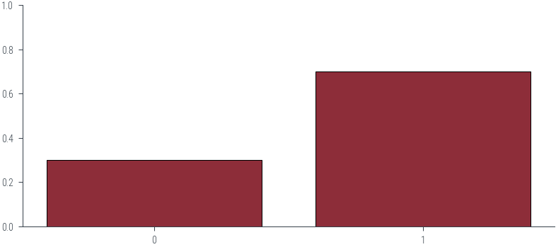
### Careful!
bernoulli = torch.distributions.Bernoulli(logits=0.3)
bernoulli.probstensor(0.5744)Logits?!
Probs range from 0 to 1, logits range from -inf to inf. Logits are the inverse of the sigmoid function.
The sigmoid function is defined as:
\[\sigma(x) = \frac{1}{1 + e^{-x}}\]
The inverse of the sigmoid function is defined as:
\[\sigma^{-1}(x) = \log \frac{x}{1 - x}\]
### Sampling
bernoulli.sample()tensor(1.)bernoulli.sample((10,))tensor([0., 1., 0., 0., 1., 1., 0., 1., 0., 0.])data = bernoulli.sample((1000,))
datatensor([1., 1., 0., 1., 0., 1., 0., 0., 0., 0., 1., 1., 1., 1., 1., 1., 1., 1.,
0., 0., 0., 1., 1., 1., 0., 1., 0., 1., 0., 1., 1., 0., 0., 0., 1., 0.,
0., 1., 0., 0., 0., 0., 1., 1., 0., 0., 0., 1., 0., 1., 1., 1., 1., 1.,
1., 0., 0., 0., 1., 0., 1., 0., 1., 1., 0., 1., 0., 0., 0., 1., 1., 0.,
1., 0., 1., 0., 0., 0., 1., 1., 0., 0., 1., 0., 1., 1., 1., 1., 0., 1.,
0., 0., 0., 0., 1., 0., 0., 0., 1., 1., 1., 0., 1., 1., 1., 1., 0., 1.,
1., 1., 0., 1., 1., 0., 0., 1., 1., 0., 1., 0., 0., 1., 0., 0., 1., 0.,
1., 1., 1., 0., 0., 0., 0., 0., 1., 0., 0., 1., 0., 0., 1., 0., 1., 0.,
1., 0., 1., 0., 0., 1., 0., 1., 0., 1., 0., 1., 1., 1., 1., 1., 1., 0.,
0., 1., 0., 1., 0., 0., 1., 0., 1., 1., 0., 0., 0., 1., 1., 0., 1., 0.,
1., 1., 0., 1., 1., 0., 1., 1., 1., 1., 1., 1., 1., 0., 0., 1., 1., 0.,
1., 1., 0., 0., 0., 0., 0., 1., 1., 1., 1., 0., 0., 1., 1., 1., 1., 1.,
1., 1., 1., 0., 0., 1., 1., 1., 1., 1., 0., 1., 0., 1., 1., 0., 1., 0.,
0., 1., 1., 0., 0., 1., 0., 1., 1., 1., 0., 0., 1., 1., 1., 1., 1., 1.,
1., 0., 1., 0., 0., 0., 1., 0., 1., 1., 0., 0., 0., 1., 0., 1., 0., 1.,
0., 0., 0., 1., 1., 0., 1., 1., 1., 1., 1., 0., 0., 0., 1., 0., 1., 1.,
1., 1., 1., 1., 1., 1., 1., 1., 1., 0., 0., 0., 1., 0., 0., 1., 0., 0.,
1., 1., 0., 1., 0., 1., 1., 1., 1., 0., 1., 0., 1., 0., 0., 0., 0., 0.,
1., 0., 1., 0., 0., 1., 0., 1., 1., 0., 1., 1., 1., 0., 0., 1., 0., 0.,
1., 1., 1., 0., 1., 0., 0., 0., 1., 1., 0., 0., 1., 1., 0., 1., 1., 1.,
1., 1., 1., 1., 0., 0., 1., 1., 1., 1., 1., 1., 0., 1., 0., 1., 0., 1.,
1., 1., 1., 0., 0., 1., 1., 1., 1., 1., 0., 0., 1., 1., 1., 0., 0., 1.,
1., 0., 1., 1., 0., 0., 0., 1., 1., 0., 1., 1., 1., 1., 0., 1., 0., 0.,
1., 0., 1., 0., 0., 1., 1., 0., 1., 0., 0., 0., 1., 0., 0., 1., 1., 0.,
1., 1., 1., 1., 1., 1., 1., 1., 1., 1., 1., 1., 0., 1., 1., 1., 1., 0.,
1., 0., 1., 0., 0., 1., 1., 1., 0., 1., 1., 0., 0., 0., 0., 1., 1., 1.,
0., 0., 0., 1., 1., 1., 1., 0., 0., 1., 0., 1., 1., 1., 0., 0., 0., 0.,
0., 0., 1., 1., 1., 1., 0., 1., 1., 1., 1., 0., 0., 1., 1., 0., 1., 1.,
1., 1., 0., 0., 1., 1., 0., 1., 1., 0., 0., 1., 1., 0., 0., 1., 1., 1.,
0., 1., 0., 1., 1., 1., 1., 0., 1., 1., 0., 1., 0., 1., 0., 0., 1., 0.,
0., 0., 0., 0., 1., 0., 0., 0., 1., 0., 0., 1., 0., 1., 0., 0., 0., 1.,
1., 0., 0., 1., 1., 0., 0., 1., 1., 1., 1., 0., 1., 0., 1., 0., 1., 1.,
0., 0., 0., 1., 0., 0., 1., 1., 0., 1., 1., 1., 1., 1., 0., 1., 0., 1.,
1., 0., 0., 0., 0., 0., 0., 1., 1., 0., 0., 1., 1., 1., 1., 1., 1., 0.,
0., 1., 1., 0., 1., 1., 0., 0., 1., 0., 1., 0., 1., 0., 0., 1., 1., 1.,
0., 0., 1., 0., 0., 1., 1., 1., 1., 1., 1., 0., 0., 1., 1., 1., 1., 0.,
1., 0., 0., 1., 0., 0., 0., 0., 0., 0., 1., 1., 0., 0., 0., 1., 1., 1.,
1., 0., 0., 1., 1., 1., 0., 0., 0., 0., 1., 1., 1., 0., 0., 0., 1., 0.,
1., 1., 0., 0., 1., 1., 1., 1., 1., 1., 0., 1., 0., 1., 1., 1., 1., 0.,
1., 0., 0., 1., 0., 0., 0., 1., 1., 1., 1., 1., 1., 0., 1., 1., 0., 0.,
1., 0., 1., 1., 1., 1., 1., 1., 1., 1., 1., 1., 1., 1., 0., 1., 1., 1.,
1., 0., 0., 1., 1., 1., 0., 1., 1., 1., 0., 1., 0., 1., 1., 1., 0., 0.,
1., 0., 1., 1., 0., 0., 1., 1., 1., 0., 1., 1., 1., 1., 0., 1., 1., 0.,
1., 0., 1., 1., 0., 1., 1., 0., 1., 0., 0., 0., 1., 1., 0., 1., 1., 1.,
1., 1., 0., 1., 0., 0., 1., 1., 1., 1., 1., 1., 0., 0., 1., 1., 0., 0.,
1., 0., 1., 1., 0., 1., 1., 1., 1., 0., 1., 0., 1., 1., 1., 1., 1., 0.,
1., 1., 1., 1., 0., 1., 1., 1., 1., 1., 0., 0., 1., 0., 1., 0., 0., 1.,
1., 1., 1., 1., 0., 1., 0., 1., 0., 0., 0., 1., 0., 1., 1., 1., 1., 0.,
0., 0., 0., 1., 1., 0., 1., 1., 1., 0., 1., 1., 1., 1., 1., 0., 1., 0.,
1., 0., 1., 0., 0., 1., 1., 1., 1., 0., 1., 1., 0., 0., 0., 1., 0., 1.,
1., 1., 0., 1., 1., 1., 0., 1., 1., 0., 1., 1., 0., 1., 1., 1., 0., 1.,
1., 0., 1., 1., 1., 1., 1., 1., 0., 1., 1., 1., 1., 1., 1., 0., 1., 1.,
0., 0., 1., 1., 1., 0., 0., 1., 1., 1., 0., 0., 1., 1., 1., 1., 0., 0.,
0., 1., 1., 1., 1., 0., 1., 1., 0., 1., 1., 1., 0., 0., 1., 1., 0., 1.,
0., 1., 0., 1., 1., 0., 1., 1., 1., 0., 1., 1., 1., 0., 0., 1., 0., 1.,
1., 1., 0., 0., 1., 1., 1., 0., 0., 1.])### Count number of 1s
data.sum()tensor(586.)### IID sampling
size = 1000
data = torch.empty(size)
for s_num in range(size):
dist = torch.distributions.Bernoulli(probs=0.3) # Each sample uses the same distribution (Identical)
data[s_num] = dist.sample() # Each sample is independent (Independent)### Dependent sampling
size = 1000
### If previous sample was 1, next sample is 1 with probability 0.9
### If previous sample was 1, next sample is 0 with probability 0.1
### If previous sample was 0, next sample is 0 with probability 0.8
### If previous sample was 0, next sample is 1 with probability 0.2### Categorical distribution
p1 = 0.2
p2 = 0.3
p3 = 0.5
categorical = torch.distributions.Categorical(probs=torch.tensor([p1, p2, p3]))
categorical.probstensor([0.2000, 0.3000, 0.5000])# Plot PDF
plt.bar([0, 1, 2], [p1, p2, p3], color='C0', edgecolor='k')
plt.ylim(0, 1)
plt.xticks([0, 1, 2], ['0', '1', '2'])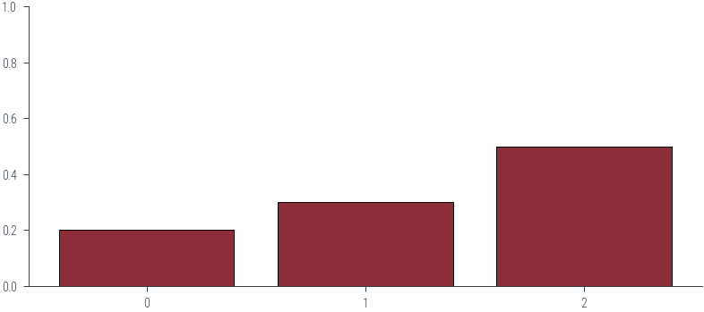
### Uniform distribution
uniform = torch.distributions.Uniform(low=0, high=1)uniform.sample()tensor(0.0553)uniform.supportInterval(lower_bound=0.0, upper_bound=1.0)### Plot PDF
xs = torch.linspace(0.0, 0.99999, 500)
ys = uniform.log_prob(xs).exp()
plt.plot(xs, ys, color='C0')
# Filled area
plt.fill_between(xs, ys, color='C0', alpha=0.2)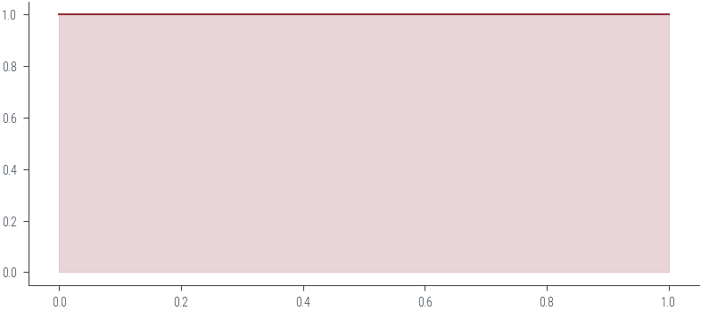
### Why log_prob? and not prob?### Normal distribution
normal = torch.distributions.Normal(loc=0, scale=1)normal.supportReal()### Plot PDF
xs = torch.linspace(-5, 5, 500)
ys = normal.log_prob(xs).exp()
plt.plot(xs, ys, color='C0')
# Filled area
plt.fill_between(xs, ys, color='C0', alpha=0.2)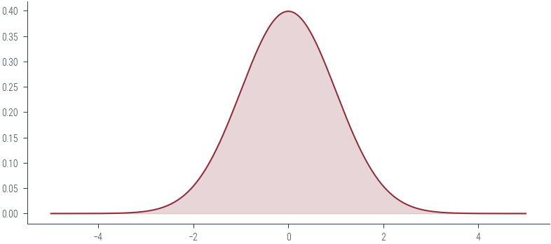
xs = torch.linspace(-50, 50, 500)
probs = normal.log_prob(xs).exp()
plt.plot(xs, probs, color='C0')
# Filled area
#plt.fill_between(xs, probs, color='C0', alpha=0.2)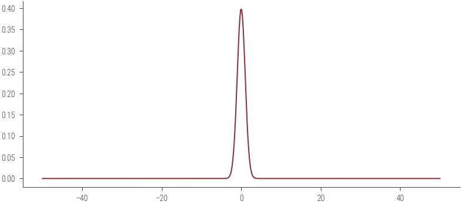
normal.log_prob(torch.tensor(-20)), normal.log_prob(torch.tensor(-40))
normal.log_prob(torch.tensor(-20)).exp(), normal.log_prob(torch.tensor(-40)).exp()(tensor(0.), tensor(0.))xs = torch.linspace(-50, 50, 500)
logprobs = normal.log_prob(xs)
plt.plot(xs, logprobs, color='C0')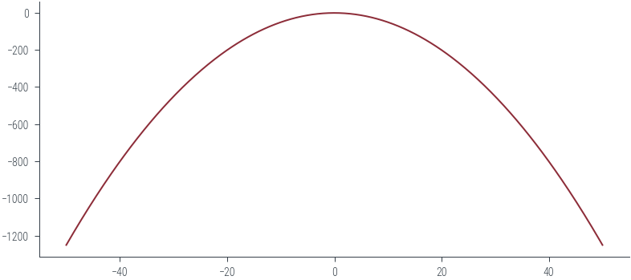
def plot_normal(mu, sigma):
mu = torch.tensor(mu)
sigma = torch.tensor(sigma)
xs = torch.linspace(-40, 40, 1000)
dist = torch.distributions.Normal(mu, sigma)
logprobs = dist.log_prob(xs)
probs = torch.exp(logprobs)
fig, ax = plt.subplots(nrows=2)
ax[0].plot(xs, probs)
ax[0].set_title("Probability")
ax[1].plot(xs, logprobs)
ax[1].set_title("Log Probability")
plot_normal(0, 1)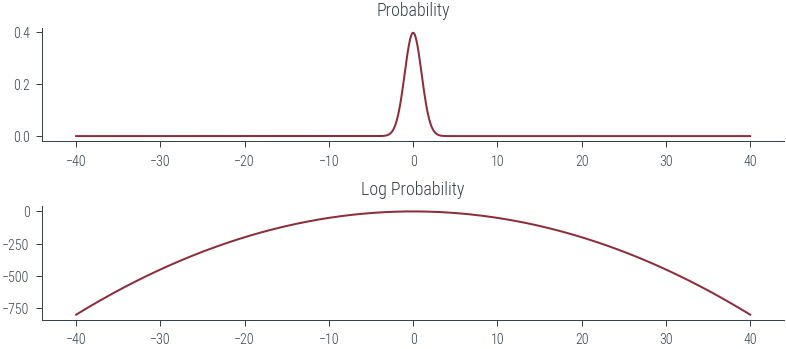
# Interactive slider for plot_normal function
from ipywidgets import interact, FloatSlider
interact(plot_normal, mu=FloatSlider(min=-2, max=2, step=0.1, value=0), sigma=FloatSlider(min=0.1, max=2, step=0.1, value=1))<function __main__.plot_normal(mu, sigma)>samples = normal.sample((1000,))
samples[:20]tensor([ 1.8764, 0.4868, -0.7966, -0.8190, 1.4538, 0.0766, -2.0262, 0.9965,
-1.1971, -0.4764, -2.1042, 0.2489, -0.2859, 1.1970, -0.7265, -0.8898,
-0.4592, -0.3581, -0.7239, -0.0790])_ = plt.hist(samples.numpy(), bins=50, density=True, edgecolor='k')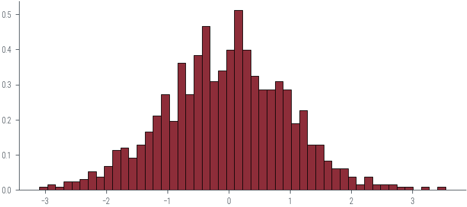
_ = plt.hist(samples.numpy(), bins=30, density=True, edgecolor='k')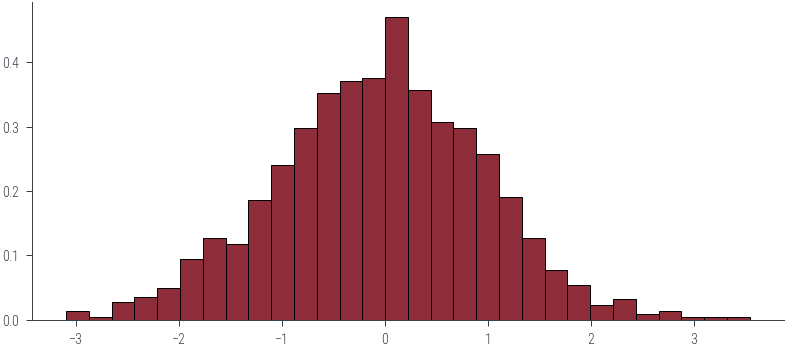
import seaborn as sns
sns.kdeplot(samples.numpy(), bw_adjust=2.1, shade=True)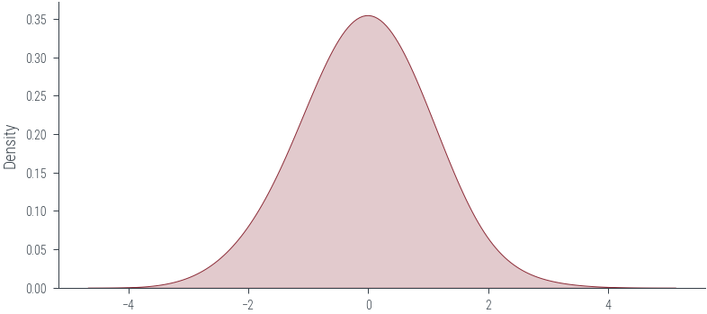
### IID sampling
n_samples = 1000
samples = []
for i in range(n_samples):
dist = torch.distributions.Normal(0, 1) # Using identical distribution over all samples
samples.append(dist.sample()) # sample is independent of previous samples
samples = torch.stack(samples)
fig, ax = plt.subplots(nrows=2)
sns.kdeplot(samples.numpy(), bw_adjust=2.0, shade=True, ax=ax[0])
ax[0].set_title("KDE of IID samples")
ax[1].plot(samples.numpy())
ax[1].set_title("IID samples")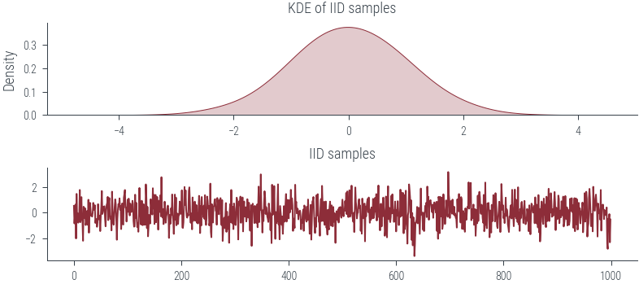
### Non-IID sampling (non-identical distribution)
n_samples = 100
samples = []
for i in range(n_samples):
# Non-indentical distribution
if i%2:
dist = torch.distributions.Normal(torch.tensor([2.0]), torch.tensor([0.5]))
else:
dist = torch.distributions.Normal(torch.tensor([-2.0]), torch.tensor([0.5]))
samples.append(dist.sample())
samples = torch.stack(samples)
fig, ax = plt.subplots(nrows=2)
sns.kdeplot(samples.numpy().flatten(), bw_adjust=1.0, shade=True, ax=ax[0])
ax[0].set_title("KDE of non-identical samples")
ax[1].plot(samples.numpy().flatten())
ax[1].set_title("Samples over time")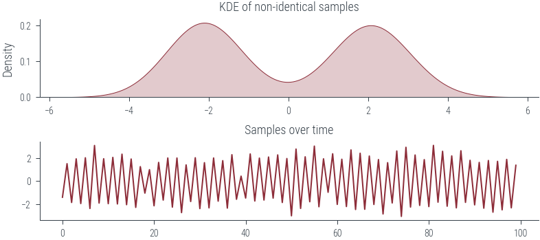
### Non-IID sampling (dependent sampling)
n_samples = 1000
prev_sample = torch.tensor([10.0])
samples = []
for i in range(n_samples):
dist = torch.distributions.Normal(prev_sample, 1)
sample = dist.sample()
samples.append(sample)
prev_sample = sample
samples = torch.stack(samples)
fig, ax = plt.subplots(nrows=2)
sns.kdeplot(samples.numpy().flatten(), bw_adjust=2.0, shade=True, ax=ax[0])
ax[0].set_title("KDE of samples")
ax[1].plot(samples.numpy().flatten())
ax[1].set_title("IID samples") 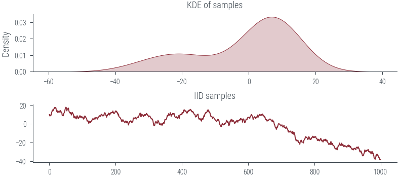
### Laplace distribution v/s Normal distribution
laplace = torch.distributions.Laplace(loc=0, scale=1)
normal = torch.distributions.Normal(loc=0, scale=1)
student_t_1 = torch.distributions.StudentT(df=1)
student_t_2 = torch.distributions.StudentT(df=2)
xs = torch.linspace(-6, 6, 500)
ys_laplace = laplace.log_prob(xs).exp()
plt.plot(xs, ys_laplace, color='C0', label='Laplace')
ys_normal = normal.log_prob(xs).exp()
plt.plot(xs, ys_normal, color='C1', label='Normal')
ys_student_t_1 = student_t_1.log_prob(xs).exp()
plt.plot(xs, ys_student_t_1, color='C2', label='Student T (df=1)')
ys_student_t_2 = student_t_2.log_prob(xs).exp()
plt.plot(xs, ys_student_t_2, color='C3', label='Student T (df=2)')
plt.legend()
zoom = False
if zoom:
plt.xlim(5, 6)
plt.ylim(-0.002, 0.02)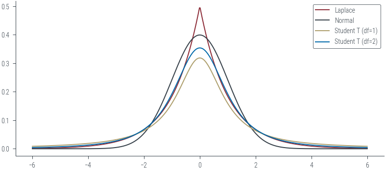
### Beta distribution
beta = torch.distributions.Beta(concentration1=2, concentration0=2)
beta.supportInterval(lower_bound=0.0, upper_bound=1.0)# PDF
xs = torch.linspace(0, 1, 500)
ys = beta.log_prob(xs).exp()
plt.plot(xs, ys, color='C0')
# Filled area
plt.fill_between(xs, ys, color='C0', alpha=0.2)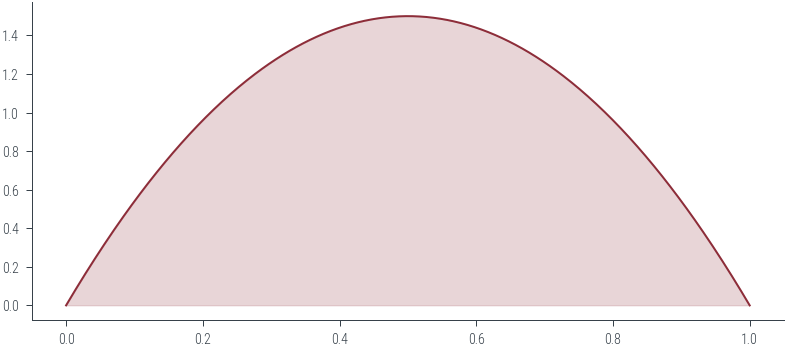
s = beta.sample()
stensor(0.3356)# Add widget to play with parameters
from ipywidgets import interact
def plot_beta(a, b):
beta = torch.distributions.Beta(concentration1=a, concentration0=b)
xs = torch.linspace(0, 1, 500)
ys = beta.log_prob(xs).exp()
plt.plot(xs, ys, color='C0')
# Filled area
plt.fill_between(xs, ys, color='C0', alpha=0.2)
interact(plot_beta,a=(0.1, 10, 0.1), b=(0.1, 10, 0.1))<function __main__.plot_beta(a, b)>### Dirichlet distribution
dirichlet = torch.distributions.Dirichlet(concentration=torch.tensor([2.0, 2.0, 2.0]))
dirichlet.supportSimplex()s = dirichlet.sample()
print(s, s.sum())tensor([0.2924, 0.3254, 0.3821]) tensor(1.)s = dirichlet.sample()
print(s, s.sum())tensor([0.3898, 0.1071, 0.5030]) tensor(1.)dirichlet2 = torch.distributions.Dirichlet(concentration=torch.tensor([0.8, 0.1, 0.1]))
s = dirichlet2.sample()
print(s, s.sum())tensor([0.8190, 0.0111, 0.1699]) tensor(1.)